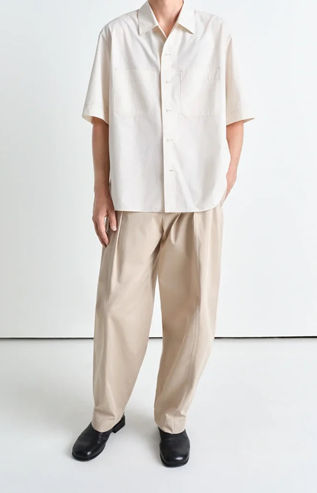
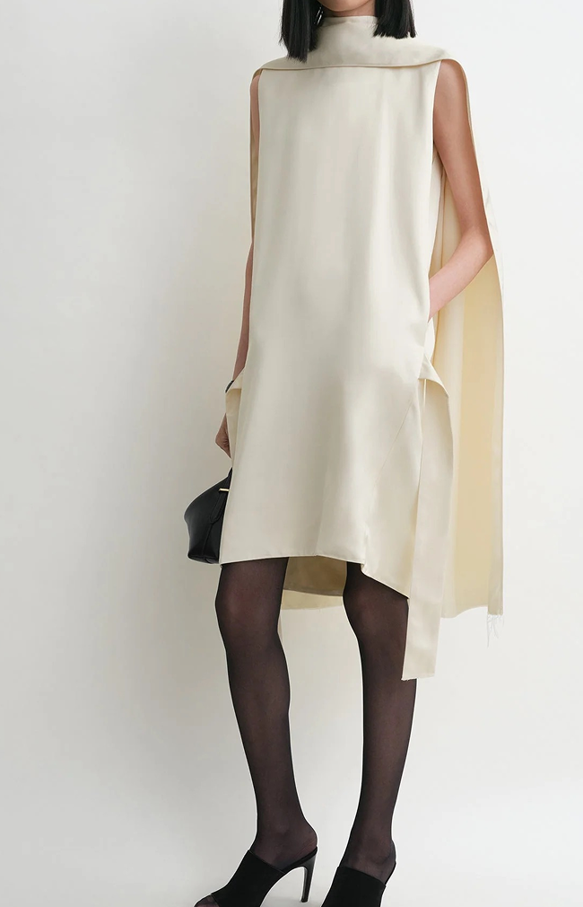
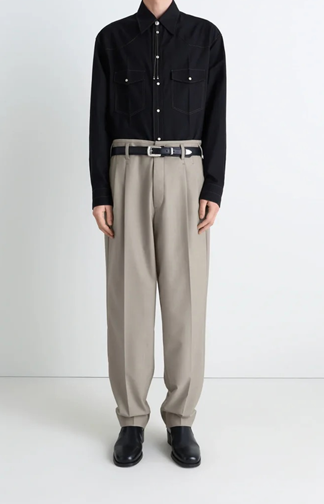
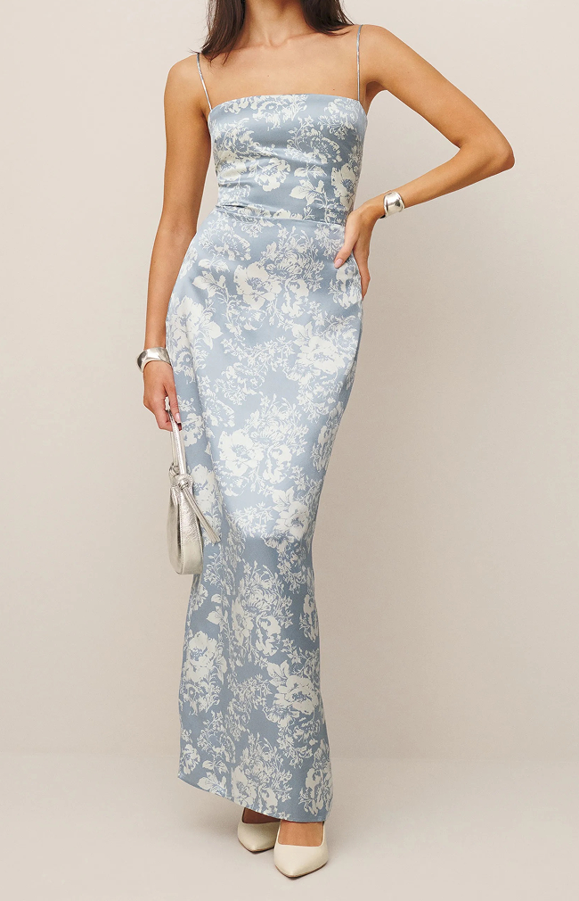
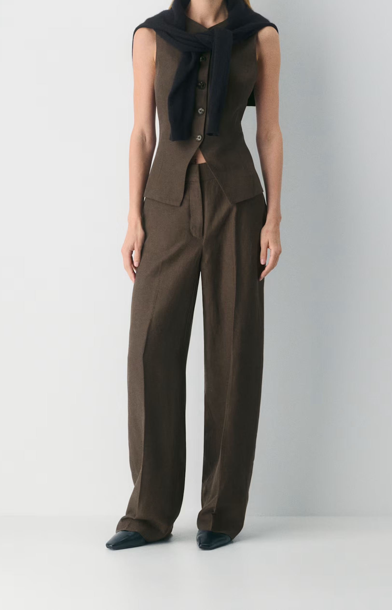
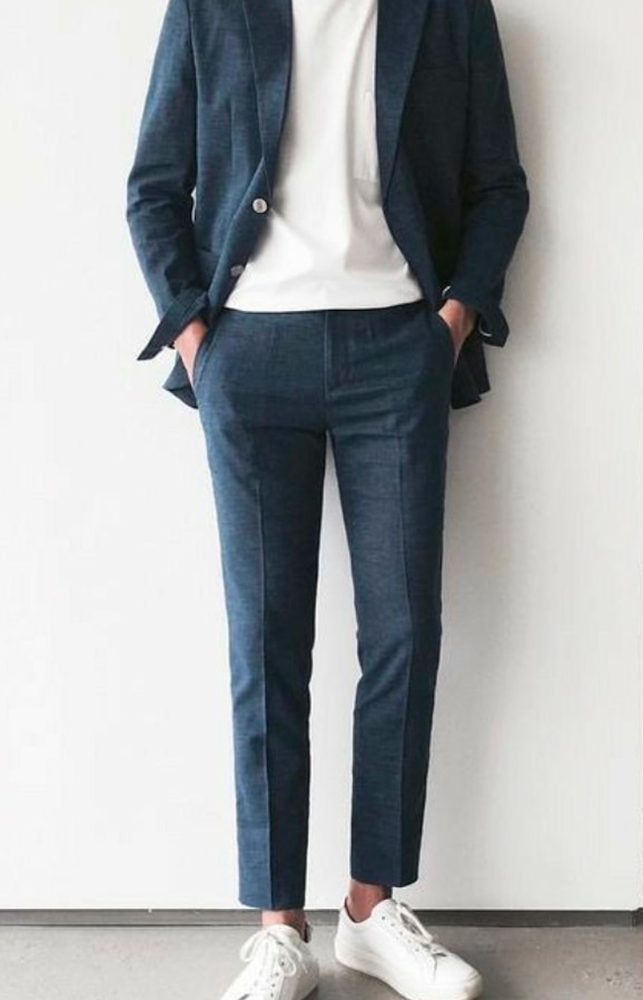

YOU'VE GOT A MAIL FROM


点击信封打开邀请函


一切都要从2022年的NC State Fair说起,两个在北卡待了很久却都没去过state fair的人莫名其妙。虽然从那一天开始我们聊天的频率更多了,但是一个人在北卡一个人在匹兹堡的异地情况让我们的关系没有太多进展,终于在寒假的时候,我们在华盛顿一起过了圣诞并且确认了关系(当然也是因为叶子很喜欢圣诞节所以想要把这一天的仪式感拉满)。
于是从2023年开始,我们开始不停的解锁新地点,新体验。我们在南卡罗莱纳山顶的教堂看了日出,在纽约的寒风中排队看乐队演出,在坦帕一起浮潜看海牛,也一起划船从暴雨划到出彩虹。
2024年我们搬到了美西,从此一发不可收拾爱上了爬山&露营。也是这段时间我们的关系有很多”安静”的时刻,我们指的是那些坐在篝火前的夜晚,雪山旁的夜路,雨中的湖畔旁等等。
2025年3月31日,在我们在坎昆度假旅行要结束的前一天,张维翀说他定了落日晚餐,我们俩得认真的打扮一下。张维翀其实为了这个晚上一整天都在紧张的忙碌中,但是钝感力十足的叶子毫无察觉。我们走到沙滩上,叶子看到了被布置好的场地以及摄像师的时候,仍然以为是落日晚餐套餐的一部分,直到拍完背影合照后看到张维种单膝跪地。
2025年10月16日,我们在最“我们”的日子里,在平时最喜欢坐着发呆的湖边officially tie the knot(我们选择的见证人是圣诞节会去扮演圣诞老人的一位老人,叶子真的很喜欢过圣诞节)。
这一次,我们非常期待与我们有着深深羁绊的你们,在北京一起庆祝我们的婚礼。感谢你们愿意作为我们故事的一部分。
(English main story placeholder)


和我们一起重温一些我们订婚中最美好的时刻。在我们准备迈向人生新篇章时，这些照片定格了我们当下的种种心情——喜悦、紧张、欢笑和爱。希望你在看这些照片时，能感受到和当时的我们一样的快乐。 Take a peek through some of our favorite moments from our engagement. These photos hold so much of what we were feeling joy, nerves, laughter, and love as we got ready for the next chapter. We hope you enjoy looking through them as much as we loved taking them.


幸运的是，我们为这一天亲自挑选了专属的‘法庭’！我们没有选择去法院，而是来到了Medina Beach Park。这里紧邻水岸，拥有观赏Mt.Rainier的绝佳视野。这也是我们一直钟爱的地方，在这里正式定下终身，让那一刻变得更加意义非凡。
尽管当时的太平洋西北地区已经进入了雨季，但云层在那一刻奇迹般地为我们散开了。我们迎来了一个清爽无雨的完美日落；那是一个氛围感十足、美丽且充满爱的傍晚——这正是我们一直憧憬的开始！
Fortunately, we got to pick our own 'office' for the day! We traded the courthouse for Medina Beach Park, right on the water with a perfect view of Mt. Rainier. It's a spot we've always loved, and making it official there made the moment feel even more special. Even though PNW had already settled into its rainy season, the clouds parted just long enough for us. We had a perfectly dry sunset moment; it was a moody, beautiful evening filled with love and exactly the start we've always imagined!
以下是我们推荐的着装配色以及搭配灵感。
建议您以鸡尾酒会风格作为选择，如果您在下方推荐中找不到灵感，可以自由发挥，只是请避免穿着蓝色牛仔裤和运动服饰。
期待您盛装出席。
Our color recommendations are shown below.
We encourage you to dress up in whatever makes you feel both festive and like yourself.
The only thing we ask is that you avoid blue jeans and athletic wear.










长按可保存图片 Long press to save image
仪式将于东景缘主殿——智珠寺举行。从正门进入后根据指示牌方向即可到达。 The ceremony will be held at the Zhizhusi (Main Hall of The Temple). Please arrive through the main gate and follow the signs to the garden area.

晚宴将由米其林法餐厅TRB HUTONG提供，并由主厨卢卡斯（Lucas Garigliano）为大家倾心主理。卢卡斯主厨的烹饪风格“独具匠心且原汁原味”，深谙法国传统烹饪精髓，并巧妙融入现代灵感。
为了给您带来别具一格的体验，本次晚宴将有别于传统的中式圆桌筵席，而是精心为您准备了经典的法式套餐（4 courses）。主厨将采撷初秋最鲜美的应季食材，将层次丰富的口感与艺术品般的摆盘完美交织，让每一道菜肴都娓娓道来一个独特的故事。席间，我们更准备了精选红白葡萄酒为您无限量供应。期待这场精致的味觉与微醺盛宴，能为您留下难忘的美好回忆。
Our wedding dinner will be catered by the renowned French restaurant TRB Hutong, thoughtfully curated by Chef Lucas Garigliano. "Creative and authentic" perfectly describe Chef Lucas’s culinary style. Deeply inspired by classic French traditions, he masterfully elevates his dishes with a modern twist.
To offer you a truly unique experience, our reception will step away from the traditional Chinese family-style banquet. Instead, we have carefully prepared a classic, individually plated 4-course French menu. Featuring the finest seasonal ingredients of early autumn, Chef Lucas beautifully blends rich flavors with artistic presentations, ensuring every dish tells its own unique story.
Throughout the evening, you will also enjoy an unlimited flow of carefully selected red and white wines. We hope this extraordinary culinary experience will leave you with beautiful and lasting memories of our special night.
我们为外地宾客在附近的酒店预留了两晚（9/11-9/13）房间。如果您有其他安排，请提前告知。 We have reserved a block of rooms at a nearby hotel for our out-of-town guests. If you require accommodations, please let us know in advance so that we may finalize your booking.
在成为我们许下誓言的殿堂之前，智珠寺已经在这片胡同深处静静伫立了六百余年。它的历史可追溯至明朝永乐年间，后于清康熙时期重修。这里曾是皇家印经厂的所在，墨香与梵音曾在此交织。我们走过世界很多地方，但最终决定在这座红墙古刹前结为夫妻，不仅因为它极简高级的美学，更因为它本身，就是一篇关于“时间与爱”的隐喻。
张维翀选择北京，因为这是他从小长大的地方。虽然他平时没少吐槽北京的交通和春天的柳絮，但离开北京后，他最想念的，偏偏是回家路上那隐隐约约的鸽哨声。而叶子对这座城市的喜爱，更多是喜欢身处北京时,松弛，自在的自己。
很多时候，北京对我们来说就是一种很具体的“感觉”。是红墙和蓝天撞在一起的颜色，是冬天铜锅涮肉飘出来的白气蒙住了玻璃，是我们俩很爱在北京约会散步，走到什刹海，然后静静地跟晚霞一起融进夜色里。
筹备婚礼的时候我们一直在想，到底什么样的空间，能把我们对这座城市的感情，以及它对我们的意义装进去呢？直到我们找到了“东景缘”。几乎是同一时间，我们毫不犹豫地说：“就是这儿了。”
它就在故宫旁边，是一座被精心修复过、有着600年历史的藏传佛教寺庙（智珠寺）。其实我们俩本身并没有特定的宗教信仰，但站在这里，那些古老的木梁和安静的院落，就是有一种能让人瞬间平静下来的力量。厚重的历史和现代艺术在这里交织得很自然，好像在喧闹的市中心辟出了一块净土。在这样一个历经岁月洗礼的地方，去开启我们共同的未来，这种不言而喻的浪漫让我们特别着迷。
而且，熟悉我们的朋友都知道，我们俩在探索吃这件事上有着无穷的热情。场地里的 TRB Hutong 餐厅，主厨是 Lucas——就是那位成功把法餐和北京豆汁儿奇妙融合在一起的大厨。这也算是满足了我们的一点小私心。
我们迫不及待想在这个低调又宁静的空间里，和最爱的亲友们一起分享这份踏实感。
Will chose Beijing because it’s where he grew up. Even though he often complains about the traffic and the spring willow catkins, what he misses most when he’s away is the faint sound of pigeon whistles on his way home. For Zoey, her love for this city is more about liking who she is when she’s here—relaxed and at ease.
Most of the time, Beijing is a very specific "feeling" for us. It’s the striking contrast of red walls against a blue sky; it’s the white steam rising from a copper hot pot in winter, fogging up the windows; it’s how we love going on walking dates in the city, strolling all the way to Shichahai, and quietly melting into the night along with the sunset.
While planning the wedding, we kept wondering: what kind of space could truly hold our feelings for this city and what it means to us? That was until we found Dongjingyuan. Almost at the exact same time, we said without hesitation, "This is it."
Located right next to the Forbidden City, it is a meticulously restored, 600-year-old Tibetan Buddhist temple (Zhizhu Temple). Neither of us follows a specific religion, but standing there, the ancient wooden beams and the quiet courtyard possess a power that makes you feel instantly at peace. The weight of history and modern art blend seamlessly, carving out a pure sanctuary right in the middle of a bustling downtown. The unspoken romance of stepping into our future together in a place that has weathered so much time completely captivated us.
Plus, friends who know us well know we have an endless enthusiasm for exploring food. The venue is home to TRB Hutong, led by Chef Lucas—the very chef who miraculously fused French fine dining with traditional Beijing Douzhi (fermented mung bean milk). You could say this satisfies a little selfish craving of ours.
We can't wait to share this deep sense of groundedness with our favorite people in this understated, serene space.
尽管仪式只有一个晚上，但是我们希望大家能用这次来北京的时间好好休息，或许也可以从下面这些我们俩非常喜欢的位置里，选到合您胃口的地点，给您的北京之行留下难忘的记忆。